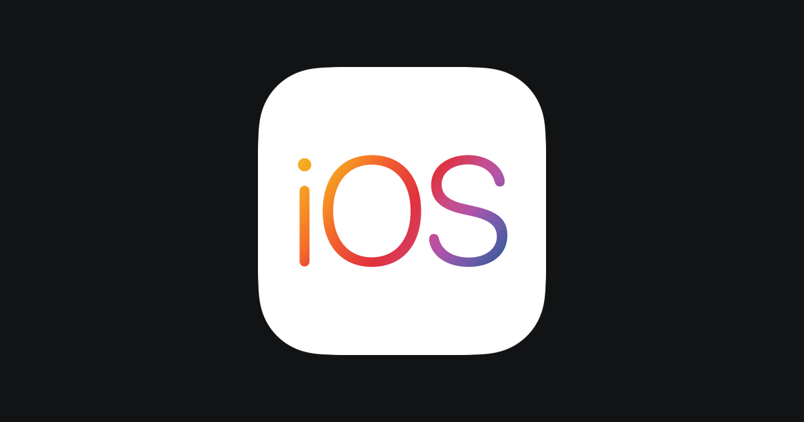

As WWDC 2021 🍎 is in full swing, it's hard to believe that iOS has been around for nearing 14 years. Somewhat as surprising is that I've been an iOS Developer for 12 of those!
I first began my foray into iOS Development back in 2009 with my first app being released in December that year. Since then, a huge amount has changed on the platform with Apple vastly developing their technology and giving developers more and more opportunity to build cool, innovative apps.
In this blog post, I want to discuss the biggest changes I've experienced during the last 12 years.
Without doubt, the most significant change in iOS Development over the last 12 years was the introduction of Swift at WWDC 2014; and the move away from Objective-C. I, like many other iOS Developers was initially rather suspicious and cautious of this new kid on the block. This wasn't helped by the poor Xcode support, slow compile times and large number of breaking changes that early Swift versions suffered from. (The jump from Swift 2 to 3 was particularly painful!
However, after 7 years of Swift, I ❤️ the language and vastly prefer it to Objective-C! I'm fairly certain that 99% of fellow iOS Developers agree.
As the variety of iOS devices has increased over the years, the complexity of building user interfaces to adapt to the different screen sizes has increased in turn. Initially, with few devices to support; building UIs programmatically to be pixel perfect was doable. But very quickly, as the number of devices increased, this approach became unsustainable and Apple introduced Auto Layout.
This changed the game and made it far easier to build dynamic UIs and support different screen sizes. XIBs and Storyboards made an appearance to assist in building these UIs. And then most recently, SwiftUI; a user interface toolkit that lets us design apps in a declarative way.
Before ARC (Automatic Reference Counting) was first introduced in October 2011, memory management in Objective-C was an entirely manual process. This was one of the biggest of pains for developers and no doubt led to a huge number of tedious bugs to try and resolve.
If you're not familiar with the days before ARC; essentially whenever an instance of a class is instantiated, a strong reference to said class is created in memory. It was then on the developer to manually deallocate the reference when it was no longer needed. Failure to do so meant that your app contained all sorts of memory leaks and retain cycle pain.
Thankfully since iOS 4.2, ARC automatically handles memory management at compile time and alleviates many a headache for developers.
Back in 2009, mobile apps were very much nice-to-haves for businesses with only the most forward thinking adopting them. Fast forward 12 years and mobile apps are now must-haves for businesses with an expectation from customers.
Never has iOS Development been so relevant and in demand.
Back in the day at the beginning of the App Store, monetising your app was very straightforward; users made a one-time up-front payment to use your software. Simple.
However, developers quickly became conscious that users wanted to try their apps for free. This led to 'Lite' versions; an entirely separate app available for free but with a limited functionality. This led to a rather cluttered and bloated App Store!
Apple became savvy to this and introduced in-app purchases; a whole new opportunity for indie developers to monetise their apps. Gone went the Lite versions and in came the free trials and Freemium monetisation models. Then at WWDC 2016, Apple introduced the ability for developers to offer auto-renewable subscriptions and with them, an entirely new avenue for developers to charge for their apps.
The changes Apple have implemented have offered developers far more opportunity and variety to how they they can monetise their software. A win for Developers, a win for Users; and a win for Apple.
When I launched my first app on the App Store back in December 2009, there were ~100k apps on the iOS App Store. As of today (06/06/2021), there are ~2.2 million. Hence, the competition is far higher. These two simple stats mean there is no doubt that it is far more difficult to make money from iOS apps in 2021 than it was in 2009.
However, that's not to say that there isn't still the opportunity to make good money on the App Store. If your app solves a problem, is executed and marketed well; then there's no reason it can't be successful. Add in the changes to monetising apps as mentioned above and there's no reason why you can't reap the financial rewards of your efforts.
Over the last 12 years, the Apple Ecosystem has grown massively. As of 2021, Apple say there are more than 1.65 billion active iOS devices! That means the market for iOS Developers to target is one of the biggest in the world. Whilst the competition for apps is higher than ever; the number of potential customers is also higher than ever.
Back in 2009, Developers could also only target iPhone and iPod Touch. Now in 2021, with the release of iPad, Apple Watch and Apple TV; the scope and breadth of apps developers can build is wider than ever.
Back in 2009, iOS Developers were relatively few and far between. Only the iPhone Dev SDK Forum was a reasonably strong source of community and knowledge.
These days; search for the 'iOS' tag on Stack Overflow and you will currently be returned 656,724 related questions! Add to that the numerous blogs, podcasts and YouTube channels related to iOS Development and the wealth of knowledge available now is fantastic.
Twitter also provides an extremely vibrant iOS Developer community. Being able to speak and interact with your fellow developers really helps with motivation, drive; and just makes the whole experience a lot more fun.
To say that iOS Development has changed drastically over the last 12 years is a massive understatement. And I for one can't wait to see where iOS Development goes in the next 12 years! 🍿